Plantas de Interior para Principiantes
Transforma tu hogar en un oasis verde en solo 30 días, incluso si nunca has cuidado una planta.
Quiero mi eBook ahoraAcceso inmediato · Compra protegida por Hotmart
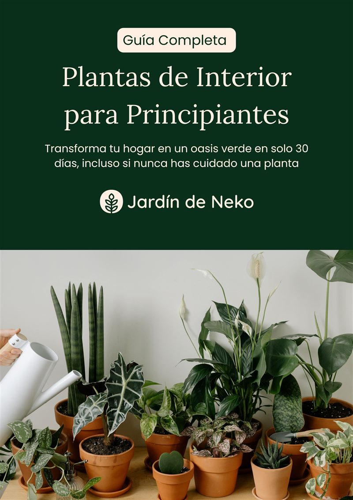
¿Te suena familiar?
Compras una planta con ilusión… y a las semanas se está muriendo
No es que tengas “mala mano”. Casi siempre es falta de información: la planta equivocada, en el lugar equivocado, con el riego equivocado.
- Hojas amarillas, caídas o con las puntas secas y no sabes por qué.
- No sabes cuánto ni cuándo regar, y terminas ahogándola u olvidándola.
- Dudas si tu casa tiene suficiente luz para tener plantas.
- Te preocupa que la planta sea tóxica para tu gato o tu perro.
En esta guía cuidar plantas deja de ser un estrés y se convierte en un espacio de conexión, relajación y disfrute.
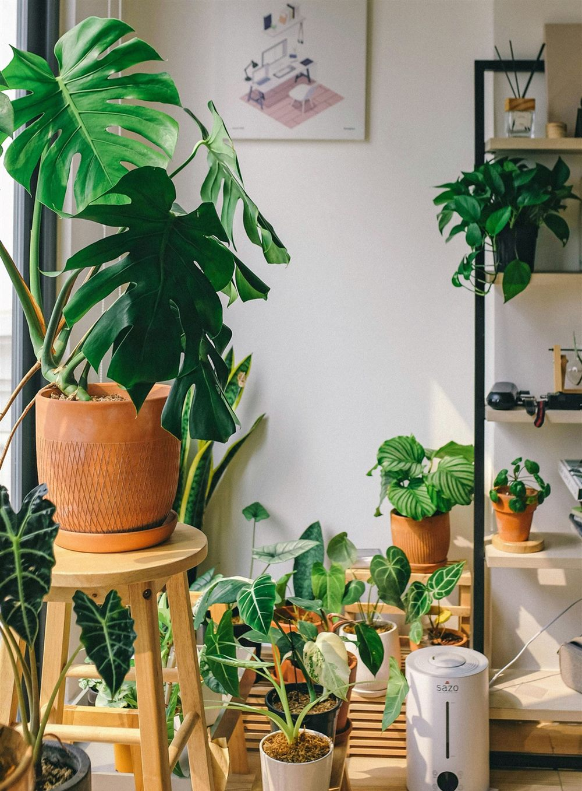
Lo que vas a aprender
Todo lo esencial, sin tecnicismos
Seis capítulos con instrucciones fáciles de seguir y tips específicos para dominar luz, riego y mantenimiento desde cero.
El camino del jardinero
El método de Mateo: paciencia y preparación, análisis y observación, crecimiento y conexión.
Beneficios de tener plantas
Aire más limpio, mejor ánimo, menos estrés y más productividad: 8 razones para llenar tu casa de verde.
Las 13 mejores plantas
Ficha de cada una: descripción, tips de cuidado y si es segura o tóxica para tus mascotas.
Cómo elegir la adecuada
Según la luz disponible, el tamaño del espacio, tu estilo de vida, el clima, tu propósito y tus mascotas.
Cuidado básico
Cuándo y cómo regar, síntomas de exceso o falta de agua y de luz, la receta de sustrato y cada cuánto abonar.
Mantenimiento esencial
Poda, limpieza de hojas, inspección regular y control natural de plagas con neem, jabón potásico y tierra de diatomeas.
Capítulo 3
13 plantas casi imposibles de matar
Las más resistentes y agradecidas para empezar. De cada una sabrás qué luz necesita, cómo regarla y si puede convivir con tus mascotas.
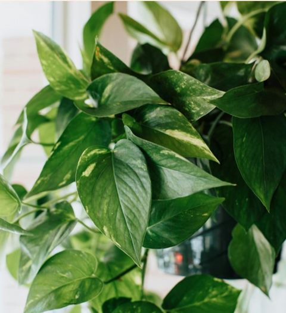
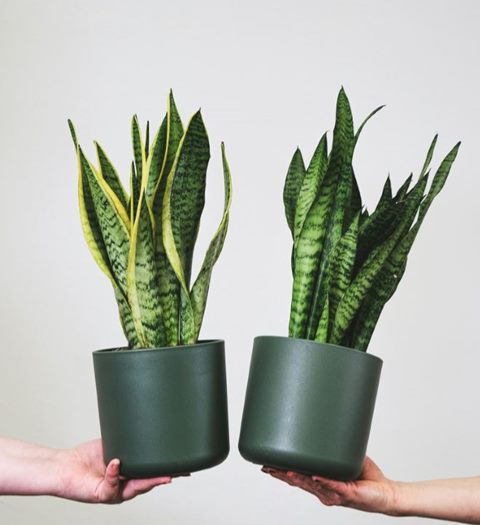
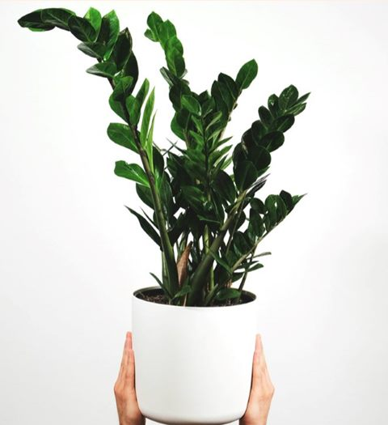
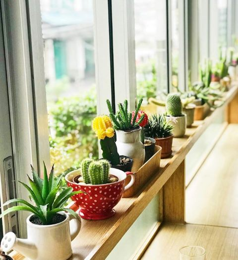
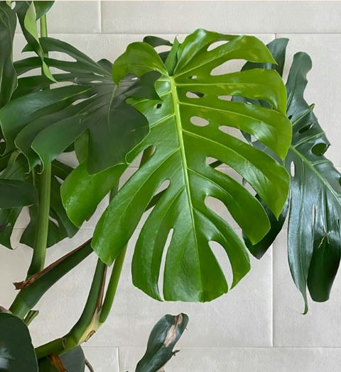
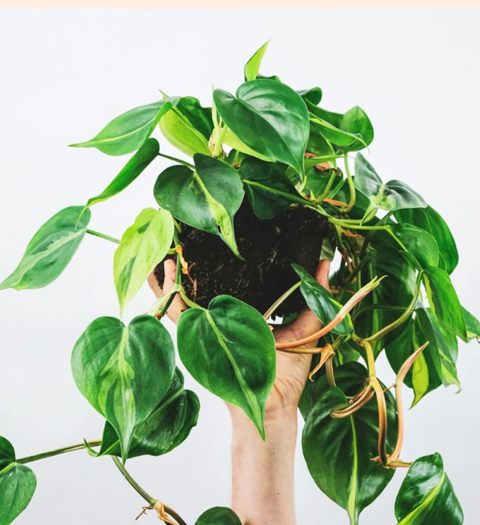
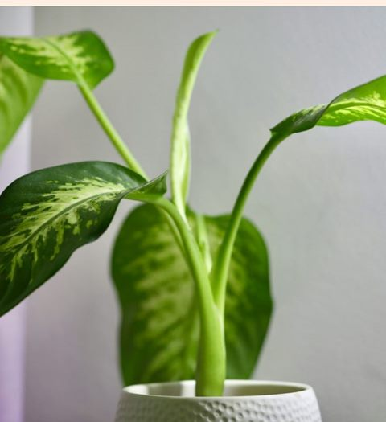
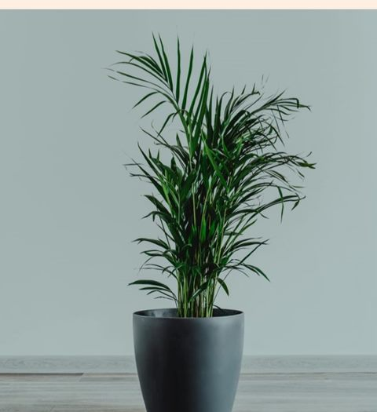
Pet-friendly
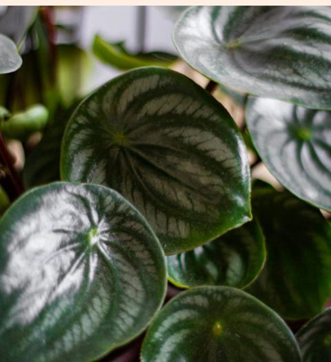
Pet-friendly
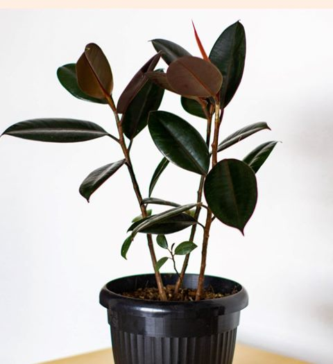
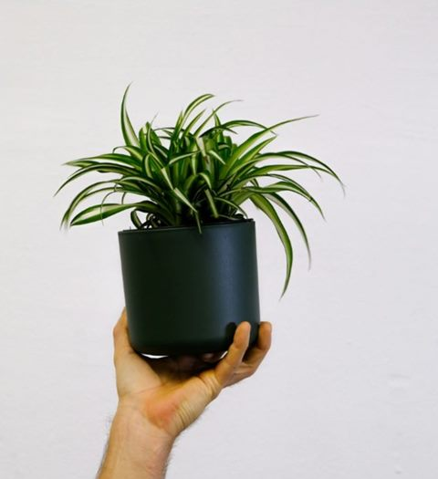
Pet-friendly
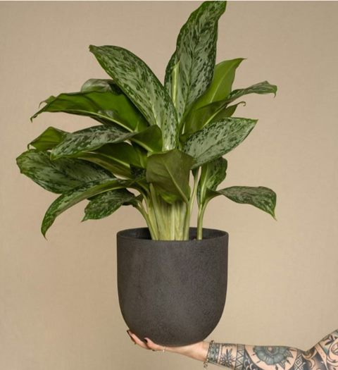
El método
El camino del jardinero
Las claves que Mateo estructuró tras años de estudio y práctica para que te conviertas en un excelente jardinero y transformes tu entorno.
Paciencia y preparación
No forzar el proceso natural de las plantas, mantener una rutina de cuidado y preparar bien el suelo desde el principio.
Análisis y observación
Aprender a interpretar los síntomas de cada planta, saber de dónde proviene y actuar sobre un problema a tiempo.
Crecimiento y conexión
Mientras cuidas tus plantas, ellas te cuidan a ti. La jardinería es más que cuidar plantas: es un vínculo con la naturaleza.
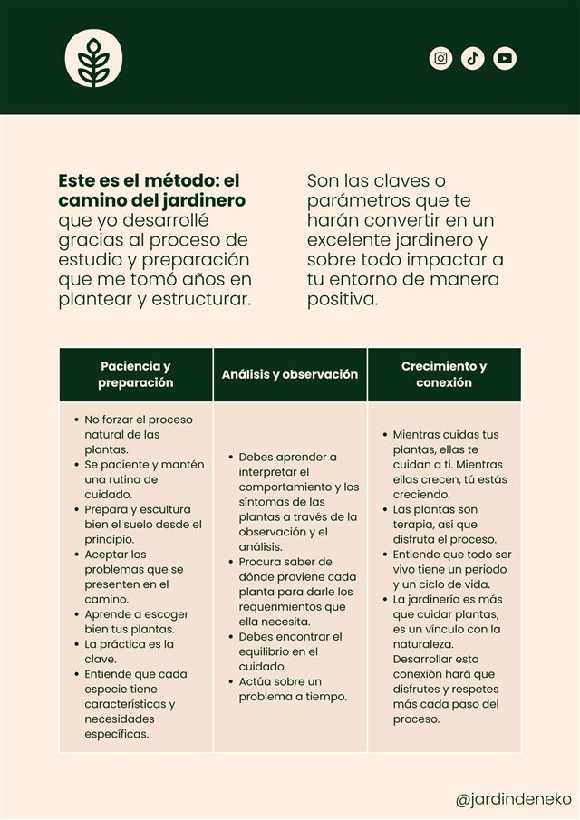
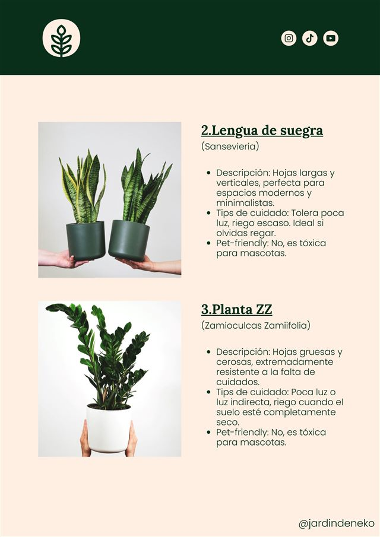
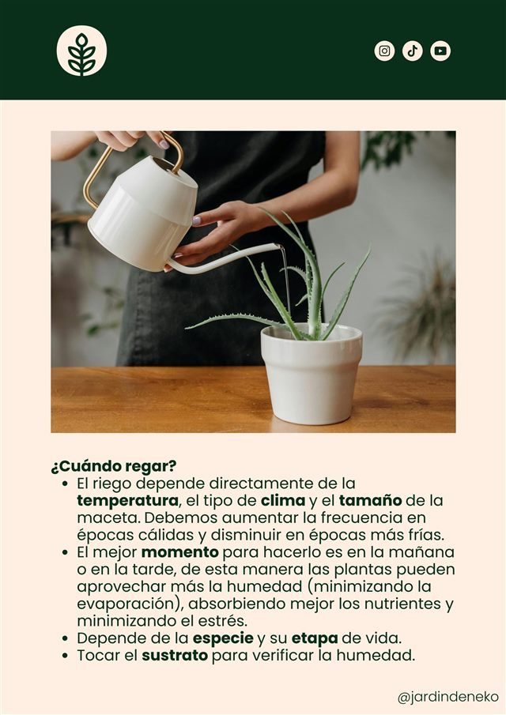
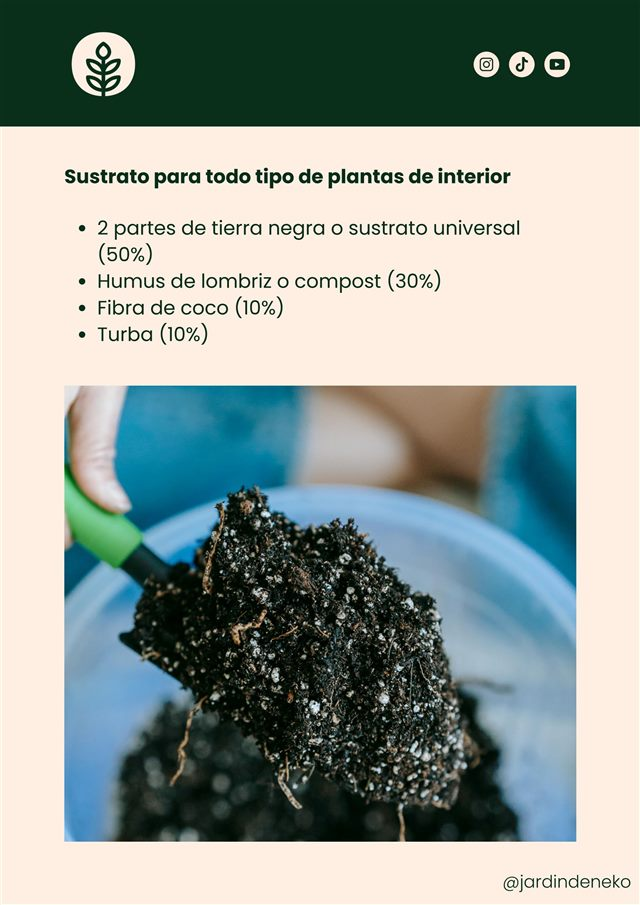
Un vistazo a las páginas del eBook
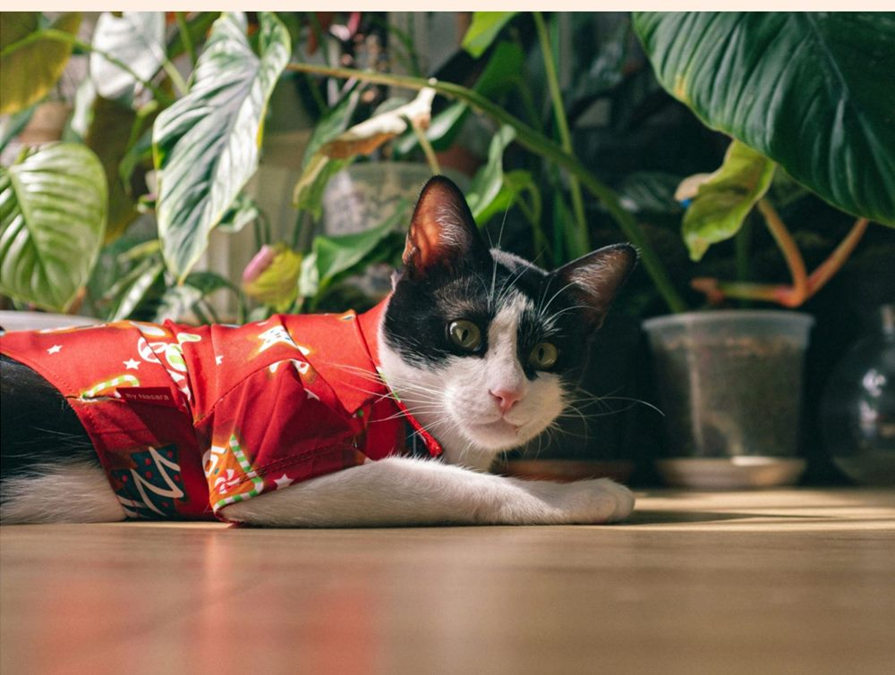
Esta guía es para ti si…
Quieres una casa verde sin complicarte la vida
- Nunca has cuidado una planta y no sabes por dónde empezar.
- Ya lo intentaste y se te murieron, y quieres entender qué pasó.
- Vives en un apartamento con poca luz o poco espacio.
- Tienes mascotas y necesitas saber qué plantas son seguras.
- Tienes poco tiempo, viajas o se te olvida regar.
Quién te acompaña
¡Hola, soy Mateo!
Soy un amante de la naturaleza, las plantas y la jardinería, y el creador de Jardín de Neko.
Busco que el cuidado de las plantas ya no sea un estrés, sino un espacio de conexión, relajación y disfrute. Ayudo a crear espacios verdes de gran impacto eligiendo las mejores plantas según el espacio, los gustos y el estilo de vida de cada persona.
Las ciudades son cada vez más caóticas, llenas de cemento, ruido y contaminación. Por eso quiero ayudarte a no perder ese contacto con la naturaleza que es tan importante para la salud física y mental.
@jardindeneko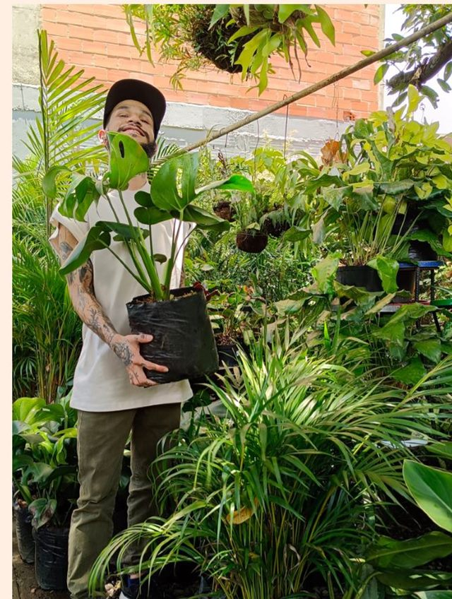
Empieza hoy
Llévate la guía completa y dale vida a tu hogar
- eBook de 47 páginas en PDF, con fotos y fichas.
- 13 plantas ideales para principiantes.
- Guía de luz, riego, sustrato, abono y control de plagas.
- Acceso a la comunidad exclusiva en Facebook.
- Soporte directo por WhatsApp.
Pago seguro a través de Hotmart. Verás el precio en tu moneda local antes de pagar.
Preguntas frecuentes
Resolvemos tus dudas
¿Cómo recibo el eBook?
Al completar tu compra, Hotmart te envía un correo con el acceso. Puedes descargarlo de inmediato y leerlo en tu celular, tablet o computador.
¿Sirve si nunca he tenido plantas?
Sí. Está pensado para quienes empiezan desde cero: explica los conceptos básicos de luz, riego y sustrato con un lenguaje sencillo y recomienda las plantas más resistentes.
Tengo mascotas, ¿me sirve?
Sí. Cada ficha indica si la planta es segura o tóxica para mascotas, y hay una sección dedicada a elegir plantas seguras para ellas.
¿Qué formato tiene?
Es un PDF de 47 páginas, ilustrado con fotografías. No necesitas ninguna aplicación especial para abrirlo.
¿Qué medios de pago hay?
El pago se hace en la pasarela segura de Hotmart, que muestra el precio en tu moneda y los medios disponibles en tu país (tarjeta de crédito o débito y opciones locales).
¿Y si tengo un problema con mi compra?
Escríbenos por WhatsApp y te ayudamos con el acceso o cualquier duda sobre el eBook.
¿Tienes alguna duda antes de comprar?
Escríbenos por WhatsApp y te respondemos personalmente.